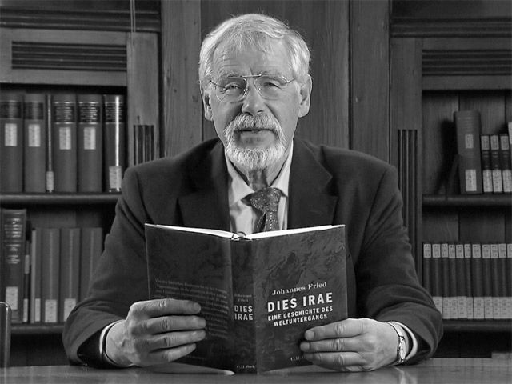

Память и историческая наука
Обращение к свидетельствам памяти: историк — о сложных темах профессионализации исторической науки
Профессора26.09.2016 // 4 326

© Йоханнес Фрид. Фото: SWR Fernsehen
Статья представляет собой переработанный и дополненный доклад, прочитанный Йоханнесом Фридом при награждении медалью имени Гаусса Брауншвейгского научного общества 8 мая 2015 года.
Уважаемые дамы и господа, пожалуйста, вспомните!
— Что?
— Не получается? Но ведь у нас всех есть память. Давайте еще раз: пожалуйста, вспомните!
— Нет, все-таки не выходит [1].
Итак, мы введены в тему: без «подсказки» мы вспомнить не можем. Призыв, «пожалуйста, вспомните!», как бы бессмысленно он ни прозвучал, выявляет главное. Нашей памяти, чтобы она была активирована, требуются установки, целеуказание. Некто или нечто должны дать ей понять, о чем нужно вспомнить. Чтобы мы могли вспоминать, требуется такое конкретное, целенаправленное обращение. Это самое «о чем?» дает начало операциям с памятью на уровне нейронов и в то же время ограничивает наличный на данный момент горизонт памяти, ее рабочий потенциал в этом случае. Такое «о чем?» требует соответствующих ощущений — зрения, слуха, чувства и т.п. Эти способности также управляются памятью, начиная с колыбели, они отрабатываются, кодируются и ограничивают соответственно потенциалу накопленного опыта наше восприятие. Мы видим, слышим и чувствуем вместе с памятью.
Но это еще не все. Каждое обращение ситуативно обусловлено в двойном смысле, оно зависит от наличных обстоятельств «обращающегося» и сталкивается с обстоятельствами, в которых находится тот, к кому обратились. Мы вспоминаем только при ситуативных, внешних или психических предпосылках, зачастую ограниченные блокировками, которые обусловлены бессознательными оговорками, и при помощи находящегося в нашем распоряжении языка или другой знаковой системы. Окружение и собственное восприятие манипулируют восприятием и памятью. Фактический результат на самом деле очень фрагментарен, размыт, как правило, в крайне высокой степени субъективен и, в общем и целом, неточен. Мое воспоминание никогда не является твоим воспоминанием, даже если мы вспоминаем об одном и том же событии.
Почему так? Почему мы не можем раз и навсегда зафиксировать след памяти в незыблемом и постоянном виде? Почему память постоянно «обманывает» нас, вводит нас в заблуждение относительно обстоятельств, которые в таком виде никогда не происходили? И что делать с этим исторической науке?
На первый узел вопросов должны дать ответ когнитивные науки, из которых в качестве наиболее полезной для историка я бы выделил нейропсихологию. Остановиться на этом подробнее потребовало бы разысканий такого общего характера, который не представляется здесь возможным ни для вас, ни для меня. Но я еще коротко остановлюсь на этом далее. Второй вопрос — насколько затронута моя научная дисциплина — можно прояснить скорее: историческая наука действительно опирается по большей части на память. Причем в двойном смысле: во-первых, все знание о прошлом в этой науке опирается на автобиографическую память, и ей требуется вся полнота наличных воспоминаний, чтобы приблизиться к происходившему в прошлом; при анализе этих воспоминаний помогают когнитивные науки. Я указал на это десять лет назад и при этом наткнулся на болезненную реакцию. Поскольку следствия не для всех представляются утешительными. Во-вторых, историк и сам должен еще помнить о релевантных для каждого случая свидетельствах. Обе предпосылки сопровождает множество ловушек. Поскольку свидетельства всегда фрагментарны, а историки не всегда знают все, подчас невнимательны и забывчивы и рассуждают на ранних стадиях исследования с небольшим опытом иначе, чем позднее, при наличии более глубокого исследовательского опыта.
Итак, только воспоминания обеспечивают формирование и сохранение воспринятого и относящегося к прошлому события; только устная или письменная передача может спасти их на долгий срок. Акты могут выступать в качестве дополнения, но и им требуются для адекватной оценки воспоминания, восприятие, контекст их возникновения и интерпретация: итак, повсюду в исторической науке властвуют воспоминания, что имеет более или менее серьезные последствия. Без памяти мы, люди, блуждали бы в пространстве, лишенном культуры и ориентиров [2]. Не лучше обстоят дела и у нас, историков: без нашей памяти мы были бы беспомощными.
Когда вас спрашивает, допустим, полицейский, что с вами произошло, ваша память реагирует по-иному, чем если бы вы рассказывали об этом вашей тете. Получаются разные истории. Аналогично происходит даже с самыми учеными среди историков; и им требуется обращение, задача, внутренний призыв, требуется так или иначе думать об аудитории. Никакой историк не может просто так писать историю. Задача и аудитория определяют его труд, управляют перспективой, содержанием и тенденцией и воплощаются в его конструкциях. Дополнительно задействовано и множество других условий и предпосылок.
Некоторое представление может дать случай в моем Франкфуртском университете. Через несколько лет после принятия рекомендованного специальной комиссией постдокторанта в исследовательский коллегиум его диссертация была разоблачена как плагиат. К делу подключилась государственная прокуратура, в нее были вызваны для разговора те семеро коллег, которые в свое время отвечали за процедуру приема. И вот, никто из семерых не помнил больше о кандидате и о процедуре, о которой шла речь. Так мне сообщил об этом информированный источник (К.-Х. Коль). Забывчивость, вытеснение из сознания, перегруженность информацией, отсутствие в свое время интереса, притупляющая рутина — сразу несколько факторов одновременно. Что бы именно ни было причиной такого угасания в памяти, такие и подобные факторы управляют воспоминаниями вплоть до полного забвения. Как при подобных условиях историк хоть приблизительно может зафиксировать реальное происшествие?
Это первый комплекс факторов, который привязывает историческую науку к памяти. Любое описание обстоятельств, все равно прежде или теперь, подчиняется определенным базовым условиям: внимание, восприятие и сенсорная перегрузка, индуцированная памятью интерпретация воспринятого, способность вспоминать, обращение за тем, чтобы вспомнить то-то и то-то, ситуативный контекст такого обращения, собственная степень задействованности, эмоциональности и не в последнюю очередь возможности символически представить воспоминание — как правило, в языке. Воспоминания — это всегда сложные комплексные процессы. Если не последует сигнала с обращением, это грозит забвением; в зависимости от того, в какой ситуации он последует, он придает воспоминаниям то или иное направление; если контекст не соответствует, интерпретация неадекватна и направляет будущее знание по ложному пути. Ситуативность и интерпретация отвечают за исключение невостребованных или проигнорированных обстоятельств. Эмоции сообщают результату направление, а без языковой фиксации никакой опыт, ни одно происшествие не может быть передано и сохранено надолго. И забвение действительно характерно для всей исторической традиции.
Обращение может последовать извне — и совсем необязательно в форме эксплицитного запроса. Целенаправленным вызовом могут служить чувственные ощущения: запах, далекая мелодия, нежный звук скрипки, полузабытые слова, обрывки фраз, короткая цитата. Такие импульсы вызывают каскад ассоциаций, которые мы не можем заметить или управлять ими. „What watch?“ — или «Посмотри мне в глаза, малышка…» — и в нашем мозгу уже раздается звоночек: «Касабланка», Хамфри Богарт, Ингрид Бергман… [3] Собственное тело также может подавать убедительные сигналы: боль, эмоциональный импульс лимбической системы, сон. Мы постоянно воспринимаем запросы на воспоминание, не осознавая их и не осмысливая рационально. Хаос воспоминания. Не в последнюю очередь это он составляет фон для сознательного намерения вспомнить, равно характерный и для историков прошлого, и для современных. Такой хаос управляет восприятием и интерпретацией.
Эти наблюдения ведут нас непосредственно к следующему важному различению, которое является определяющим для нас, историков, хотя и не все признают его значение. А именно, нам следует различать три типа воспоминаний, которые, будучи связаны друг с другом и теснейшим образом взаимодействуя, аналитически должны быть разведены друг от друга. Они проявляются в разных формах и имеют различимое между собой воздействие. Это автобиографическая память (то, о чем помню я), коллективная память (знание, которое фиксируется нашим социальным окружением при помощи коммуникации, слухов, институтов или обстоятельств) и культурнаяпамять (совокупность устной и письменной традиции, мир книг — как бы главная библиотека общества). Эти три типа встречаются в прошлом и в настоящем. Историки, как правило, имеют дело со всеми тремя. Переходы между этими типами текучи.
Ограничимся кратким пояснением. Что такое автобиографическая память, мы все знаем. Ее миссия — непрерывность нашего бессознательного и сознательного самоутверждения; она обеспечивает когерентность нашей биографии, нашего настоящего и наших прошлых времен, или, иначе говоря, непрерывность прожитой истории. Но она постоянно обманывает. Психологическими экспериментами доказана поразительно высокая степень подверженности автобиографической памяти ошибкам. Как заверял меня Ханс Маркович [4], ошибки могут содержать до 40% воспоминаний. Почему это так? Почему, несмотря на благие намерения, мы с таким постоянством вспоминаем неправильно?
Историки также опираются на свою автобиографическую память — на то, что они сами пережили (как когда-то Фукидид или Эйнхард, биограф Карла Великого), услышали от других или прочли. И в их случае следует считаться с процентом ошибок, доходящим до 40%. Великий Леопольд Ранке, не имея возможности проверить, полагался в своем изложении «сербской революции» на журналистские отчеты из этой страны, потому что источник представлялся ему заслуживающим доверия, — сомнительное предприятие! [5] Ибо и самая доброжелательная оценка ничего не говорит о способностях восприятия и воспоминания у свидетеля. Во всяком случае, сенсорная перегрузка в наши дни могла бы негативно повлиять на потенциал памяти.
С коллективной памятью мы сталкиваемся с детства, например, в усвоенном нами разговорном языке с его семантикой, в продуктах консенсуса и договора — общественном мнении или «политической корректности», но и также в виде типичной для общества жестикуляции — поднятого вверх большого пальца, вытянутого указательного или поднятого среднего пальца на правой руке, а также привычных форм жизни, моды, общественной рутины. Смысл «машины», «улицы» или «шума» не требуется каждый раз возобновлять в сознании; как и обстоятельства социальной жизни — «налоги», «бюрократия», «администрация». Все они сохраняют благодаря коллективному действию сформировавшееся и передающееся из поколения в поколения знание. Носители языка постоянно изобретают новые обороты, которые распространяются, вращаются некоторое время и через пару лет сами собой исчезают. Кто через 20–30 лет еще будет знать, что такое Kita [6], Buga [7], Defi [8] или селфи? Кто из нас знает, что у мусульман обозначает вытянутый указательный палец правой руки, хотя мы постоянно видим этот жест на фотографиях активистов «Исламского государства»? (= указание на Аллаха).
Все это область коллективной памяти. Слова указывают на социальные учреждения, которые несут не требующих дальнейших разъяснений для каждого значение и содержание. Все они передают совместно вспоминаемое прошлое. Непонимание может возникнуть из-за двойственности знаков или временного перезаписывания их значений в памяти, и это может иметь катастрофические последствия. Те, кто получил приглашение на эту лекцию, могли без проблем различить ситуацию и не боялись, что их собираются «загрузить» в какой-нибудь багажник [9]. Однако недоразумения случаются чаще, чем мы того желаем. И историки, пожалуй, сталкиваются с ними чаще, чем им кажется.
Наконец, наши воспоминания опираются на культурную память. Вера и религиозные практики, мемориализация, знание о прошлом, уклад жизни, нравственные ценности или образцы поведения также передают ее. Таким образом, она дает возможность духовной ориентации. На помощь ей приходят школа или публичное поминовение. Эта культурная память сохраняет не то, что было, а то, что и как было передано через поколения и о чем вспоминают. Таким образом она обеспечивает базу для знания. Но то, что ее содержание признается всеобщим, еще не делает ее корректной в смысле соответствия реальности. Даже самые знаменитые историки способствовали передаче некорректных культурных знаний. Столетиями считалось неопровержимым, что племя франков прибыло из Трои; немецкие гуманисты охотно верили выдумкам, которые Анний из Витербо пытался вписать в культурную память немцев, — о четвертом сыне Ноя по имени Туиско, который был якобы общим основателем их племени [10].
Хотя Ян Ассманн сделал культурную память знаменитой [11], однако историки не спешат включать в свой критический анализ те или иные типы воспоминаний — притом что любая историческая традиция и все историческое познание основано на воспоминаниях. Многие критики решительно отвергают их на том основании, что воспоминания не помогают делу и уводят слишком далеко. И потому, что исторической науке-де давно известно об ущербности памяти. Такая позиция и до сих пор препятствует необходимым систематическим исследованиям на эту тему [12]. Поскольку систематические анализы комплексной природы памяти и «эффекта ложной памяти» („false-memory-effect“), за немногими исключениями, еще отсутствуют. При этом и в культурной памяти — и даже особенно в ее случае — выявляются подчас роковые ошибки.
Для иллюстрации мы можем обратиться к речи бывшего федерального канцлера Герхарда Шрёдера на совместном заседании Бундестага ФРГ и Национального собрания Франции в зеркальном зале Версальского дворца 22 января 2003 года. Шрёдер заявил в ней, что в этом зале баварский король Людвиг II в 1871 году преподнес прусскому королю Вильгельму I императорскую корону Германии [13]. Речь, имеющая такой высокий официальный статус, ярко иллюстрирует постепенное помутнение культурной памяти и вытеснение ее ошибочными сведениями. Скорее скептически смотревший на Париж баварец был теперь, спустя 132 года, в инверсивном воспоминании, превращен в сторонника пруссака. Многие годы речь канцлера можно было прочесть в Интернете в неоткорректированном виде. Так ошибка благодаря участию авторитета получает шанс проникнуть в культурную память. Такого рода авторитетная памятьуже не раз утверждалась в прошлом. На самом деле, как мы в Германии учили в школе и как это изображено на картине очевидца, художника Антона фон Вернера, императорские регалии преподнес великий герцог Фридрих I Баденский, зять Гогенцоллернов.
Безусловно, имеют место и ложь, заведомое умолчание, сознательная манипуляцияпереданным, в том числе тяга к выдумкам, которая особенно характерна для религиозных историй. Мы не будем говорить о них сегодня, хотя из-за них возникают разнообразные деформации в культурной памяти и существенно затрудняется историческое познание, — в той мере, в какой они остаются нераспознанными и не могут быть заменены и откорректированы с помощью других, более корректных свидетельств [14]. Мне на ум приходит, например, фундаментализм евангеликов в США и их неизменное утверждение о сроке в 6000, максимум 10 000 лет между сотворением мира и его концом. На такие псевдознания как источник искажений было обращено внимание уже давно.
Итак, любая историческая традиция основана на воспоминаниях, определяется ситуацией и зависит от интерпретаций. Индивидуальная автобиографическая память (например, память историков), коллективная память (к примеру, интерпретативного сообщества, к которому они обращаются) и культурная память (например, специфическая традиция историографии в обществе) соединяются при этом воедино. Сознательные или бессознательные установки интерпретации и эмоции, посторонние влияния, сверхстимуляция, предубеждения затемняют память. Они управляют и манипулируют вниманием, а тем самым — восприятием и воспоминаниями. В общем, они обеспечивают в значительной степени бессознательный отбор данных для традиции и тем самым ведут к бессознательной манипуляции. Даже особо важные данные уязвимы для искажений. Результаты зависят от условий кодирования в мозгу и смешивания вспоминающего субъекта с чужим опытом и воспоминаниями.
К воспоминанию присоединяется забвение. Ни память, ни забывание не создают стабильных условий. Забытое сегодня может снова стать актуальным завтра, а актуальное сегодня — забытым завтра. Эта игра тянется некоторое время. В старости могут всплывать в памяти сцены из детства и юности, о которых человек не думал в течение всей жизни. Все мы знаем часто создающий неловкие моменты феномен, когда мы не можем вспомнить имя встреченного нами человека. А потом, когда уже поздно, приходит просветление. Ах да, точно, это же был… Заблокированное имя при помощи какого-нибудь обращения всплывает снова. В области исторической традиции могут происходить схожие вещи. Если зафиксированное свидетельство останется неоткорректированным, оно первоначально заведет даже самого опытного историка на ложный путь.
Можно продемонстрировать, что свидетель, несмотря на собственное участие в происшедшем, несмотря на статус очевидца, несмотря на относительную временну́ю близость к тому, о чем он сообщает, несмотря на дополнительные письменные записи, несмотря на высокую эмоциональную автобиографическую ценность воспоминания, может помнить неправильно. Я как-то продемонстрировал это на примере философа Карла Лёвита [15]. Ни один очевидец не может быть надежным протоколистом внешнего хода событий в своей жизни. Автобиографическая память, которой мы обязаны осознанием собственной личности и к которой так или иначе прибегает любое изучение прошлого, — никудышный историк. Как часто моя коллега, занимающаяся новейшей историей, была вынуждена слышать упреки более старших по возрасту слушателей: «Госпожа профессор, вы не можете этого знать — вас тогда не было». На самом деле искажения возникают уже в процессе чувственного восприятия. Этому есть разнообразные подтверждения. Об этом хорошо знают сотрудники уголовного розыска, которые имели дело с психологией свидетельств очевидцев. Историку следовало бы у них поучиться.
Немецкая история, особенно новейшей эпохи, просто изобилует подобного рода искажениями. И не только история Средних веков (моя собственная специализация). Сделанное в свою защиту в Нюрнберге заявление Альберта Шпеера о том, что он не присутствовал на программной речи Гиммлера об уничтожении евреев в Познани (Позене), удалось сделать объектом фальсификации. Пока — скорее поздно — не появилось собственное признание Шпеера, которое опровергало его более поздние (!) заявления, сделанные под присягой, и наглядно демонстрировало ложность поспешных выводов ведущих немецких историков новейшей эпохи. К тому времени, когда аспирант, открывший и доказавший нелицеприятную правду, был надолго ошельмован угрозой подать в суд за клевету со стороны бывшего министра Гитлера. Искажение воспоминаний приобретает здесь характер преступления [16].
Другие ложные воспоминания не приносят вреда, но их воздействие, тем не менее, показательно. Секретарша Гитлера Траудль Юнге провела последние дни Третьего рейха в бункере фюрера [17]. В своих записках 1947–48 годов она вспоминала: на ступеньках лестницы между двумя отсеками бункера она приласкала брошенных, потерянных детей Гебельса, утешала их, сделала бутерброды, и вдруг — «выстрел, такой громкий, такой близкий, что все мы замерли. Его эхо прокатилось по всем помещениям». Самоубийство Гитлера. Ба-бах!! Это вводящее в заблуждение воспоминание свидетельницы Т. Юнге о том, как она хотела видеть события, невозможно ни технически, ни акустически. Потому что на лестнице стоял гул дизельных моторов вентиляции. Даже камердинер Гитлера Хайнц Линге, который ждал выстрела непосредственно перед личными помещениями Гитлера в бункере, не услышал его, как он пишет в своих воспоминаниях. Обман восприятия у секретарши? У слуги? Выдуманная реальность? Но выданная за свидетельства очевидцев мировой истории! Бедные историки!
Временна́я и смысловая инверсия искажает воспоминания, остальное довершают телескопические эффекты и эмоциональное участие. Такие шутки наша память играет с нами, людьми, постоянно. Показательно также, как эта секретарша Гитлера запечатлела историю своей свадьбы. А потом, — говорится в ее мемуарах, — случился Сталинград, пришло известие о капитуляции VI армии. Это было где-то в середине лета, «серым и дождливым днем», — пишет она. На самом деле, когда это произошло, там, в России, была жестокая стужа, но и в ставке фюрера Вольфшанце в Восточной Пруссии, где тогда служила Юнге, лежал глубокий снег. Это было, как мы знаем, в конце января — начале февраля 1943 года. И это воспоминания очевидца спустя лишь четыре-пять лет после происшедшего. На самом деле она вышла замуж спустя полгода после того, как пал Сталинград [18]. Память совершенно будничным образом перемешала последовательность времени.
Режиссер Оливер Хиршбигель развернуто воспроизвел в 2004 году на основании мемуаров Т. Юнге сцену на лестнице в бункере. «Наповал!» — кричит там сын Геббельса. Его фильм «Бункер» был награжден в следующем году «Оскаром» как лучший зарубежный фильм года. Воображаемая псевдореальность… В другой сцене этого же фильма воспроизводится последний визит Альберта Шпеера к Гитлеру, тоже в бункере. Чтобы попрощаться, как выразился Шпеер [19]. Министр предлагает в фильме своему фюреру остаться с ним. Гитлер отказывается. От настоящей истории, как она должна была бы быть, тут не осталось ничего. В первом варианте своих мемуаров, так называемом варианте из Шпандау, Альберт Шпеер утверждал в отношении этого события (23–24 апреля 1945 года), что он оплакивал зверское убийство дуче и в связи с этим, глубоко взволнованный, предложил Гитлеру остаться с ним. На самом деле Муссолини повесили лишь спустя четыре или пять дней после документированного последнего посещения Шпеером своего верховного патрона. Хиршбигель выкинул пассаж про дуче, однако связанное с этим предложение Шпеера остаться с фюрером в остальном посчитал за аутентичное — возможно, опираясь на мемуары Шпеера, изданные под редакцией Йоахима Феста [20]. Посредством фильма подобные искажения грозят проникнуть в культурную память.
Конечно, такие очевидные ошибки мы, историки, можем откорректировать и посмеемся над ними. Однако кто из зрителей или зрительниц фильма «Бункер», кто из критиков заметил и исправил перетасовки и измышления в фильме? Образы обычно более цепки, чем слова. Так через исторические фильмы в культурную память проникают искаженные воспоминания и фикции. И мы слишком часто остаемся один на один с такими сомнительными достижениями памяти или незаметно позволяем им ввести нас в заблуждение, чтобы достичь наших исследовательских целей. Чем далее мы отваживаемся проникнуть в прошлое, тем меньше становится выбор — мы попадаем в настоящую дилемму.
Как же историк, который не удовольствуется фальшивыми воспоминаниями, а хочет знать, что произошло в действительности, может избежать ловушек памяти, которые он встречает повсюду, и часто в скрытой форме? Возможно ли это? Перетасовки нередко еще и увеличены искажениями, которые возникают, например, из-за употребления различных языков. Не производим ли мы, историки, как этого многие опасаются, только фикции прошлого? Только нарративы, подобные истории о Генрихе Птицелове, как «Песнь о Роланде» или приколачивание своих тезисов Лютером?
Коллективная и культурная память также не дают, как уже говорилось, надежных данных. Они отражают условия передачи наследия, в которые они вовлечены, и содержат еще более коварные ловушки, чем автобиографическая память. Событие, о котором идет речь, проходит, например, в случае коллективной памяти через различные, часто запутанные процессы коммуникации; оно проходит через память многих людей и подчиняется динамике задействованных медиа: будь то язык, визуальное воздействие или — более современно и особенно запутанно — сети, такие как Интернет, Фейсбук, Твиттер. Коллективная память подвергается при этом незаметным и бессознательным манипуляциям.
Этнологам известен феномен достижения договоренности о спорных обстоятельствах на большом совете [21]. При этом коллектив, который, в конечном счете, приходит к консенсусу, должен свести все изложенные различающиеся друг от друга воспоминания в единую нормативную коллективную память. Такого рода договорные процессы практиковали, например, туземные сообщества в Африке; они вносили свой вклад в достижение мира между задействованными группами. Живой пример можно найти в автобиографии Нельсона Манделы, который в своей юности непосредственно участвовал в подобном совете. Историки же европейских стран — не без высокомерия по отношению к «недоразвитой» Африке — практически не рассматривали такого рода совет как основу их наследия или даже решительно отвергали — в ущерб историческому познанию. Ибо и для европейцев образы прошлого — предмет договоренности.
Я прибегаю к терминам «совет» и «договоренность», поскольку они если не по назначению, то по воздействию на память вполне соответствуют коммуникационным процессам в обществах Средневековья или модерна. За примерами далеко ходить не надо, а примеры подсказывают методы анализа. Так, признающиеся основными исторические свидетельства о знаменитом «хождении в Каноссу» императора Генриха IV представляют собой лишь смесь известий о различных, но носивших исключительно антикоролевский характер собраниях князей — то есть не чем ином, как совете князей. Это результаты договоренности групп интересов относительно последних событий в истории, результаты, которые дошли до историков в различные моменты и через информантов, по-разному владевших событиями, — и которые еще раз были видоизменены историками в соответствии с их собственной принадлежностью к определенной группе интересов [22]. Отдельные отличия между изображением событий дают возможность подвергнуть эти свидетельства критическому анализу с точки зрения памяти. Односторонность этих результатов договоренности необходимо еще откорректировать с привлечением высказываний прокоролевской партии, которых на самом деле немного. Оценка, которая при этом будет получена, освободится от стереотипов прежних образов прошлого, ведет к иной истории Каноссы, чем ее представляли до сих пор учебники истории (и которую все еще поспешно воспроизводят шарахающиеся от критики исторической памяти, как черт от ладана, журналисты).
В результатах договоренностей заложены личные и политические интересы задействованных групп, расходящиеся между собой современные эпохе интерпретации того, о чем идет речь, — но не только, и в любом случае не всегда одни и те же, а сознательно и бессознательно отобранные воспоминания о предыдущих действиях, планах, интерпретациях и собственных желаниях, о соглашениях, компромиссах, решениях, противоречиях, о предыдущих выводах. К переданной (преимущественно устно) информации стоит относиться как к игре детей в испорченный телефон: с каждой новой промежуточной ступенькой невольно изменяется еще немного из первоначального содержания. Смесь эмоций и интересов обеспечивает дальнейший бессознательный отбор и манипуляцию данными. Если ничего не предпринимать, то наше знание о прошлом, как уже говорилось, ограничивается нарративами и контрнарративами, при невозможности достичь определенности в знании о них. Причем ограничивается не только для современных событиям участников, но и для их потомков-историков. Необходимы юстировки методологии для контроля за результатами воспоминаний наших свидетелей и их потомков.
Обговоренный и фактически достигнутый результат совета редко или вовсе не фиксируется точным образом в воспоминании о изначально происшедшем, но как правило представляет собой смесь того, к чему стремятся участвующие группы интересов, с чем они могут согласиться или как по мнению информантов события должны были бы развиваться. Результат представляет собой подчас совершенно новую версию с большей или меньшей степенью соответствия реальности — а то и вообще без всякого такого соответствия. Здесь проявляют себя маски страсти. Во всех обществах — и в устных и в так называемых письменных культурах, которые на самом деле не могут обходиться без устности, — происходят соответствующие коммуникативные процессы договоренности. Получающееся теперь противопоставление результатов договоренности и действительно происшедшего (насколько его может реконструировать работающий критическими методами историк) обещает нам новые знания о соответствующем обществе, его элитах, его интересах и формах поведения и о реально принятых решениях или их завуалировании. Здесь для историка — подчеркнем еще раз — все зависит от того, насколько он располагает надежными критическими методами для контроля над памятью и насколько эти методы получили всеобщее признание. Иначе и самые лучшие результаты завязнут в болоте нарративов и контрнарративов.
К Каносскому феномену, которому скоро минет тысяча лет, это относится в такой же степени, как к событиям и происшествиям дня сегодняшнего. Конечно, интенсивность информационного потока еще более выросла. В поле модерных массмедиа несомненно происходят маневры, подобные совету у этнологов; при этом не всегда возможно или легко проследить происхождение интервенций от самых источников. Целенаправленные манипуляции, сознательные и бессознательные результаты воспоминаний, предрассудки и предрасположенности задействованы в решающей степени и теперь.
Негативные, в буквальном смысле разрушительные последствия бывают тогда, когда официальные политические или иные влиятельные — например, торговые — группы заинтересованных лиц вносят завуалированную дезинформацию, предназначенную для введения общественности в заблуждение. Как это, к примеру, имело место в дискуссиях о смерти Усамы бен Ладена. Цель — ни много ни мало деформация коллективной и коммуникативной памяти общества. Результатом является отнюдь не разрешающий, умиротворяющий совет, а, напротив, стратегия, направленная вместо примиряющего консенсуса на подавление своей стороной противника. Историческое суждение, основанное на высказываниях и традиции, которые возникли подобным или схожим образом, идет по ложному пути. Необходимость критического анализа памяти становится в этом случае особенно острой.
В спорах о смерти бывшего главы «Аль-Каиды» превалируют распространяемые в книгах, фильмах и репортажах две взаимоисключающие версии. Одна опирается на официальные инстанции, вплоть до президента Обамы и тогдашнего госсекретаря Хиллари Клинтон, а также на спецподразделение «Морских котиков» и их сообщения. Другая версия опровергает все это как преднамеренный обман, который был обнародован, чтобы скрыть от общественности малоэффективную работу американских спецслужб, чтобы оправдать применение для признательных показаний пыток и создать иллюзию успешной операции задействованных войск. Возможно ли это? Действительно ли Обама и прочие лгали, фальсифицировали, целенаправленно вводили в заблуждение общественность? Как было на самом деле?
В конфликте между нарративом и контрнарративом до сих пор были в решающей степени задействованы ставшие известными благодаря неприкрытой разведывательной деятельности американские журналисты. В своих «рассказах» они представляют результаты расследований, обусловленных собственной биографией [23]. Автобиографическая память того или иного свидетеля или передатчика информации также не выключается, хотя она и подвергается комплексу внешних влияний. Иной раз появляются ходячие нарративы. Так, повествуется, как после великолепной работы разведки возникает героическая перестрелка в убежище бен Ладена, которая заканчивается гибелью противника, далее утверждается о похоронах в открытом море по мусульманскому обычаю, якобы запечатленных на фото, — которых не видел ни один свидетель и которых на самом деле не было, и т.п. С противной стороны вместо успеха ЦРУ речь идет о пакистанском перебежчике, которого само пакистанское правительство вынудило открыть до тех пор тщательно скрывавшееся убежище лидера «Аль-Каиды». Он якобы нейтрализовал меры охраны и вопреки всем тезисам военной героизации обеспечил «морским котикам» ВМС США жалкий расстрел ничего не подозревавшего бен Ладена, труп которого ликвидировали в море быстро, тайно и без всяких церемоний.
Эти нарративы попадают в США в условия конфронтации политических партий, для политики они играют роль бактерий, приобретая в результате снова тенденцию к деформации. Раскол проходит через все американское общество. Что действительно произошло тогда, в 2011 году, в пакистанском Абботабаде, пока, несмотря на многочисленность осведомленных лиц, похоже теряется в тумане не согласующихся друг с другом нарративов. При этом дело шло не только об этих драматических событиях, но были затронуты щекотливые для внутренней и внешней политики страны очень чувствительные политически и довольно весомые исторически вопросы. Была вовлечена и мировая общественность — не в последнюю очередь, мусульманская община, не говоря уже о лишенном мира Ближнем Востоке.
О чем говорят нам примеры с Каноссой или смертью бен Ладена? В первую очередь они призывают к максимальной осторожности по отношению к дошедшей до нас информации (особенно там, где задействован «совет»), к бдительному недоверию по отношению к коллективной памяти, независимо от того, от кого берет начало информация. Кроме того, недопустимы поспешные выводы. Соответствующие свидетельства могут быть правильными или хотя бы частично соответствовать истине, а могут быть совершенно ложными. В процессе совета процент увеличения или уменьшения ошибок может достигать 40%. Если деформации попадают в устную или письменную традицию, ошибки приобретают статус перманентных. Тогда, если у историка нет в распоряжении контрольных свидетельств, у него нет шансов понять, что действительно произошло. Может ли он найти выход из этой дилеммы?
Особенно много проблем доставляют коммуникативные процессы воспоминания, которые попадают в культурную память, — то есть увековечены в исторических учебниках как сведения о реально происшедшем. Ибо для культурной памяти не играет роли, насколько истинно воспоминание фактически, соответствует ли оно обстоятельствам в прошлом или нет. Даже притом что ради ее «правды» зачастую воздвигаются баррикады и прибегают к оружию. Тогда воздействие культурной памяти может быть почти смертоносным. Современность иллюстрирует это многочисленными примерами. Возмущен при этом бывает лишь критически подходящий к делу историк, ибо он принимает в расчет и оперирует по меньшей мере двумя реальностями: собственно событием, воздействие которого независимо от воспоминания, и воспоминаниями о нем и их последствиями.
Пережиткам неисторической памяти следует уделять особое место в главах о религии или псевдорелигии, а в худшем случае — о демагогии. Итак, необходимо недоверие — недоверие не к доброй воле людей, а к их способности вспоминать и различать. Поэтому, с точки зрения методологии, для исторической реконструкции любое свидетельство воспоминания — все равно в каком контексте возникшее, непосредственно автобиографическом, коллективном или культурном — необходимо считать в принципе ложным и не заслуживающим доверия до тех пор, пока не доказана его справедливость или по крайней мере по нему не дано разъяснений. Если появляются сомнения, необходимо провести дальнейшие исследования или отвергнуть (мнимое) свидетельство как неверное.
Тезис о воспоминании, которое вводит в заблуждение, колеблет основы не только автобиографии — с ним шатаются подпорки истории, существовавшие на протяжении тысячелетий. Ибо вся ранняя историческая традиция так или иначе основана на воспоминаниях тех, кто принимали участие в событии или «были при» нем. Временнóй промежуток между событием и самым первым письменным свидетельством о нем предполагает ряд устных посредников между ними, а значит, и игру в «испорченный телефон». Главные источники об Александре Македонском начинают появляться лишь столетия спустя после его смерти. Что они берут из дошедшей информации, насколько она надежна, ориентировались ли они на героические образцы, вставлены ли сюда мифобиографические мотивы — все это в деталях уже точно не установить. История становится здесь «общепринятой сказкой» (‚fable convenue‘).
Знаменитые Commentarii de bello Gallico Цезаря были написаны спустя годы после описанных военных походов в значительной степени (хотя и не только) по памяти. Искажения неизбежны. Но кто — кроме, конечно, Астерикса с Обеликсом — увидел несоответствия? Описания того, как саксонец Генрих, отец Оттона I Великого, достиг королевского титула, появились спустя 40 лет после происходивших событий. Они следуют, хотя и существенно различаясь между собой, только версии победителей и не дают слова проигравшим [24]. Но кто откажется от чудесного сюжета с Генрихом Птицеловом, который принял преподнесенный ему королевский титул возле ловчей сети для птиц? Ряд подобных примеров можно продолжить вплоть до современности. Нередко национальное самосознание видит в этом угрозу для себя.
Исследователи жизни Иисуса Христа давно и хорошо знают о возникающих проблемах. Ни одно из сообщений о судебном процессе и Воскресении не похоже на другое [25]. Критический анализ Евангелий и других свидетельств с точки зрения истории права (например, аргументы, собранные бывшим верховным судьей государства Израиль Хаимом Коном) рисуют иную картину практиковавшихся правовых процедур, чем предвзятые свидетельства, возможно, взявшихся за перо лишь столетие спустя после событий евангелистов [26]. Другие сомневались в Воскресении, как упоминают уже Матфей (28, 11–18) или Марк (16, 11–13), или считали соответствующие сообщения ложью. Есть сомнения с богословской и медицинской точки зрения в крестной смерти Христа — а тем самым, в Воскресении, главном фундаменте христианской веры [27]. Историку готовность поверить мало что дает в познании исторических обстоятельств. Исторический анализ сталкивается с живой верой, сея сомнение. Но, тем не менее, «Страсти по Матфею» Баха — это чудо красоты.
Довольно примеров. Они открывают необозримо широкий горизонт значимых для историка ложных воспоминаний. Почему так получается? Как работает наша память, никакая историческая наука не поясняет, хотя любое историческое познание опирается на предыдущие и на наши собственные результаты работы памяти. И эти результаты, как мы должны принять, в высшей степени ненадежны. Значимость таких оценок необходимо конструктивно использовать для исторического исследования, надо знать их причины и делать из них выводы. Это требование без всякой оглядки на последствия решительного критического анализа памяти, которая опирается на все находящиеся в нашем распоряжении занимающиеся памятью дисциплины. Такой анализ требует согласования методов научно-исторической критики с данными экспериментальной психологии и различных дисциплин когнитивных наук, которые рассматривают потенциал воспоминаний и память.
Наконец, и прежде всего, исторической науке требуется для применения в собственной практике методологическое руководство по тому, как следует обращаться со свидетельствами памяти. Такое руководство может быть создано только на основе систематического исследования доступных контролю ложных воспоминаний; оно должно основываться на знании оперативных модусов памяти, и в то же время его цель — выработать типологию соответствующих факторов и форм деформации. Подобное предприятие оказывается успешным тогда, когда об одном и том же событии имеется много возникших независимо друг от друга воспоминаний одного и того же лица, которые можно сравнить между собой. Подобное сравнение указывает не только на «эффект ложной памяти» как таковой, но и — при повторяющихся регулярно ошибках — на типичное деформирующее воздействие человеческой способности памяти. То же самое необходимо учитывать при работе с исторической реконструкцией, чтобы не утонуть полностью в упоминавшемся болоте нарративов. При этом нам нужно исходить из того, что генетически обусловленные операционные модусы памяти всего за несколько тысячелетий исторической традиции, опирающейся на письменность, в принципе не поменялись, даже при изменении эпигенетических факторов. Как раз эти последние — культурные влияния — от историка не укроются так или иначе. Этот методологический принцип я называю «меморикой» (Memorik).
Для этого я обратился не в последнюю очередь к когнитивным наукам, особенно исследованиям по нейропсихологии. Разумеется, они не помогут понять, что произошло, но могут объяснить, почему воспоминания, на которые опираемся мы, историки, ненадежны и в какой степени они могут быть деформированы. При определенных обстоятельствах и с определенной долей везения они могут показать пути, чтобы увидеть эти деформации и с помощью разумного критического анализа наличного материала сохранившейся исторической традиции дойти до ее неискаженного содержания, соотнеся его с лежащим в основе событием. Они сопоставляют расходящиеся исторические свидетельства и удостоверяют их противоречия и сомнительные места.
Некоторые замечания относительно когнитивных наук, по крайней мере нейропсихологии, тут все же уместны настолько, насколько они могут быть полезны нам, историкам. Проблематика этих дисциплин — ложные воспоминания и их когнитивные условия. И то и другое зависит от операционных модусов мозга. Ссылка на эти науки, по моему опыту предыдущих публикаций, нередко понимается историками превратно — так, будто бы рассмотрение нейрональной деятельности способно чудесным образом привести к историческим познаниям. Конечно, это чушь. Однако неврологические данные могут иметь значение для анализа исторических свидетельств и помочь нам более уверенно делать оценки. Прежде всего, выработать методологические шаги для противодействия «эффекту ложной памяти».
Любое восприятие связано со сложной системой. Оно встроено в комплексную нейрональную сеть, которая приобретает свои свойства не только генетически, но и как раз эпигенетически. Восприятие со своим опытом, если тот определенным образом кодирован, не ограничивается только одним, актуальным актом: познание гибко реагирует на все контакты чувственным восприятием — зрением, слухом, обонянием и т.п., в том числе на языковую или символическую информацию. Многое здесь соединяется для того, чтобы побудить клетку или соединение клеток подать свой сигнал: это визуальная, акустическая или ольфакторная обработка сигнала, абстрагирование, идентификация, представление понятий, способность к чтению и т.д. — все это работа памяти. Зрительная или слуховая кора и в целом все задействованные для когнитивной работы зоны коры головного мозга участвуют в обработке информации в такой же степени, как способность к абстракции, которая сконцентрирована в префронтальной коре, или эмоции, которые добавляет лимбическая система.
Но в каждой из этих зон содержится множество иной доступной для запроса информации помимо той, которая требуется в настоящий момент: постоянное корректное различение их друг от друга происходит не всегда. Поступающие сигналы должны сравниваться с уже закодированной информацией, должны определять и оценивать подходящее и неподходящее, контекст информации и пограничные области, знакомое и незнакомое, должен быть принят ряд — по большей части бессознательных — решений. Новый запрос может глубоко изменить или полностью уничтожить предыдущее воспоминание. Ни одно воспоминание не возникает два раза в неизменном виде; каждый запрос конструирует его заново.
Здесь могут появиться проблемы — перезапись, инверсия, перемешивание. Они повышают вероятность ошибок при кодировке и отзыве на запрос, а с ними — неудовлетворительных результатов воспоминания о пережитых обстоятельствах. Наконец, результат этих нейрональных процессов становится доступен нашему сознанию. Как это становится возможно, все еще — насколько я знаю — представляется загадкой. На этом этапе, например, при сходстве черт лица фотография человека может ассоциироваться с неправильным именем, уже слышанный голос — не с тем, кто говорит, визуальное впечатление — с неправильной интерпретацией. Или же фикция, сон, увиденный много лет назад образ могут превратиться в фиктивную реальность. Как уже было сказано, до 40% воспоминаний могут быть неправильными.
«Меморике» до сих пор известно двадцать факторов из критического анализа памяти, должным образом верифицированных нейропсихологией и релевантных для исторической науки. При этом я не отделяю резко действующие в подсознании первичные факторы от вторичных факторов, которые — например, ложь или сознательное искажение — главным образом формируются сознательно и их легче увидеть [28]. Учет этих факторов помогает верифицировать ошибки автобиографической памяти; некоторые из них могут быть также привлечены для анализа манипуляций общественного мнения, а нередко коллективной или коммуникативной памяти, и плодотворно использованы для необходимой корректировки.
1) Активное или пассивное участие;
2) интуитивное использование уже закодированных нейронально образов;
3) повторение (ведет к канонизации);
4) установочные исходные данные знания (вопрос, стресс и т.п.);
5) количество и интенсивность вспоминаемых событий;
6) оценка, выборка, деконструкция поступающих данных органов чувств;
7) конструкция воспоминаний с помощью отобранных данных;
8) эмоциональное самопозиционирование (стыд, самогероизация и т.п.);
9) готовность к канонизации воспоминаний;
10) контаминация нескольких событий одного рода;
11) телескопия;
12) перезапись факторов одного рода из различных эпизодов в своеобразные смешанные конструкции;
13) сведение растянутых во времени событий к единственному моменту, жесту, а возможно, и слову;
14) многозначность поступающих сигналов;
15) временнáя и качественная инверсия;
16) кодирование восприятия в ситуативных социальных, психических или нейрональных условиях;
17) воспроизведение при ситуативных условиях;
18) синдром уверенности;
19) бессознательное «списывание» первичных и вторичных факторов деформации;
20) жизненный возраст.
Отправные точки для сомнения в правильности нарратива требуют шаг за шагом непредвзято и без предрассудков сопоставлять наличный материал дошедшей традиции с вышеназванными возможностями деформации и проигрывать гипотетические возможности: что было бы, если бы та или иная возможность действительно имела место? Как результат той или иной корректирующей гипотезы соотносится со всем комплексом данных дошедшей традиции? Результатом являются правдоподобия (Plausibilitäten), которые ближе к обстоятельствам прошлого, чем предыдущие конструкты. Исследования этнографами так называемых устных культур (т.е. культур без письменной традиции или с ограниченным употреблением письменности) указывают, кроме того, на значение воспоминания не для мемориальной консервации какого-либо прошлого, а для легитимации собственного настоящего — или для его делегитимирующего истолкования. Подобное же, между прочим, относится и к любой культуре, пока она не апеллирует к исторической науке, критически рассматривающей традицию. Особенно пугает в этом отношении ссылка на религиозную традицию для легитимации политических действий.
Правда, — это надо еще раз подчеркнуть, — и меморика не может просто так сделать из неточного воспоминания точное. Особенно если необходима корректировка коллективной памяти, как проиллюстрировано на приведенном примере смерти бен Ладена. Меморика должна в этом случае набраться терпения, надеясь на уточненную информацию и более адекватную критическую оценку происходившего, чем это возможно в настоящее время. Совет, как бы он ни был «организован», для исторических реконструкций всегда останется расплывчатым источником информации. То же соответственно касается убеждений веры.
Однако меморика, как правило, в состоянии распознать неточности, может предложить указания по корректировке и улучшенные правдоподобия с большей вероятностью, чем предыдущие интерпретации. Меморика — как и прочие исторические науки — оперирует гипотезами, она может, например, девальвировать одну ранее принятую информацию и повышать оценку другой. Она может по-новому анализировать различающиеся версии дошедших свидетельств, корректировать данные во времени, подчеркивать или отрицать участие или неучастие определенных лиц, указывать на действия, которые ранее игнорировались. Она может обращать внимание на дошедшие до нас традиции, которые до сих пор были несправедливо обойдены вниманием, иногда даже оценивать до сих пор не принятое во внимание по его релевантности и ставить в центр.
Прежде всего меморика обосновывает, почему необходимы соответствующие переоценки и, при благоприятных условиях, почему их необходимо предпринять в такой форме, а не иной. Тем самым меморика определяет правдоподобность дошедшей до нас традиции. В качестве инструмента критического анализа традиции она дополняет уже известные инструменты: меморика их расширяет. Из этого также следует, что меморика аргументирует, находясь не вне традиции, в отрыве от нее, но, как всякое историко-критическое исследование, остается связанной с этой традицией. То, что эта методика обещает успех, показал пример с Альбертом Шпеером и упорным отрицанием им своего присутствия на печально известной Познаньской речи Гиммлера 1943 года, прежде чем стало известно о письменном признании бывшего министра Гитлера на аукционе «Сотбис» в Лондоне. Особенно отвратительно то, что он сделал это признание (в частной переписке) перед тем, как прибегнуть по просьбе друзей к правовой процедуре против своих противников, которая требовала заявлений под присягой. Иначе говоря, он прекрасно представлял себе, насколько его поведение манипулятивное и просто вероломное. Но именно такая позиция некогда и спасла ему жизнь.
Задним числом результат анализа критики памяти воспринимается — и это не должно смущать — точно так же, как исследование по традиционной методике: то есть критически разбирающие традицию, насыщенные ссылками на литературу и достоверно изложенные аргументация и анализ или/и привлекательное изложение. Так и должно быть, поскольку критику памяти необходимо достоверно согласовать с сохранившимися свидетельствами, и в ней также не избежать словесной презентации. Но путь туда начинается после т.н. «эвристики источников» при методологически контролируемой критике памяти этих самых дошедших свидетельств эпохи. Такие свидетельства следует заново оценить, упорядочить и скомбинировать, сформировав из них соответствующий обновленный нарратив. Результат вполне может таить неожиданности, к которым будет готов не каждый исследователь, привязанный к традиционным образам истории. Ведь предыдущие исследования могут оказаться неверными, якобы правильные свидетельства — повернуться иной стороной, так что откроется новая картина прошлого. Радикальная демифологизация может глубоко потрясти. Может срочно понадобиться переориентация в современности.
Ибо, хотя мы и живем будущим, наше бытие определяет не оно, а прошлое.
Примечания
↑1. Текст резюмирует и выделяет отдельные аспекты предыдущих собственных работ автора на эту тему: Fried J. Der Schleier der Erinnerung. Grundzüge einer historischen Memorik. Исправл. и дополн. издание, Beck’sche Reihe. München, 2012. Краткое резюме — в сборнике „Geistes-Geschichten“ — Neue Perspektiven in der (Kirchen)Geschichtsschreibung // Kirchliche Zeitgeschichte. 2009. Vol. 22. No. 1. S. 49–65. Другие исследования на эту тему: Fried J. Gedächtnis und Kultur. Perspektiven auf eine neurokulturelle Geschichtswissenschaft. Ein Versuch // C. Heuer, C. Pflüger (Hrsg.). Geschichte und ihre Didaktik. Ein weites Feld… Unterricht, Wissenschaft, Alltagswelt. Gerhard Schneider zum 65. Geburtstag, Schwalbach im Taunus 2009. S. 168–203; Он же. Ungeschehenes Geschehen. Implantate ins kollektive Gedächtnis — eine Herausforderung für die Geschichtswissenschaft // Millennium. 2008. No. 5. S. 1–36; Он же. Erinnerung im Kreuzverhör. Kollektives Gedächtnis, Albert Speer und die Erkenntnis erinnerter Vergangenheit // Historie und Leben. Der Historiker als Wissenschaftler und Zeitgenosse. Fschr. f. L. Gall, hg. von D. Hein, K. Hildebrand und A. Schulz. München, 2006. S. 327–357; Он же. Gehirn macht Geschichte // Gehirn und Geist. 2005. No. 5. S. 52–57; Он же. Entlarvung einer Legende. Eine Streitschrift. Köln; Weimar; Wien, 2012.
↑2. Markowitsch H.J., Welzer H. Das autobiographische Gedächtnis. Hirnorganische Grundlagen und biosoziale Entwicklung, 2Stuttgartt 2006; Welzer H. Das kommunikative Gedächtnis. Eine Theorie der Erinnerung. Beck’sche Reihe, München, 2005.
↑3. Речь идет о фильме «Касабланка» (США, 1942), который имеет в Германии культовый статус. Диалог двух эмигрантов из Германии в фильме «Касабланка» на искаженном английском: “What whatch? — Six watch. — Such much!?” Другая фраза — в диалоге главных героев; немецкая версия, которую цитирует статья (“Schau mir in die Augen, Kleines!”), — неправильный перевод английского оригинала (“Here’s looking at you, kid”, «За твое здоровье, малышка»). — Прим. ред.
↑4. Профессор психологии Университета г. Билефельд. — Прим. ред.
↑5. Ranke L. Die serbische Revolution. Aus serbischen Papieren und Mittheilungen. Berlin, 1829.
↑6. Аббревиатура Kindertagesstätte (ясли). — Прим. ред.
↑7. Аббревиатура Bundesgartenschau (ежегодная федеральная садово-парковая выставка). — Прим. ред.
↑8. Дефибриллятор. — Прим. ред.
↑9. Игра слов в немецком оригинале: глагол einladen обозначает одновременно «приглашать» и «загружать, наваливать». — Прим. ред.
↑10. Об этом: Muhlack U. Die „Germania“ im deutschen Nationalbewusstsein vor dem 19. Jahrhundert // Muhlack U. Staatensystem und Geschichtsschreibung. Ausgewählte Aufsätze zu Humanismus und Historismus, Absolutismus und Aufklärung / Hg. von N. Hammerstein und G. Walther // Historische Forschungen. Berlin, 2006. No. 83. S. 274–299. См. об этом также статью Бернда Шнайдмюллера. — Прим. ред.
↑11. Assmann J. Das kulturelle Gedächtnis. Schrift, Erinnerung und politische Identität in frühen Hochkulturen. München, 2013.
↑12. Vollrath H. Das Mittelalter in der Typik oraler Gesellschaften // Historische Zeitschrift. 1981. No. 233. S. 571–594. См. также указания у: Fried. Canossa (прим. 1), здесь S. 19–30 et passim.
↑13. «<…> Людвиг II Баварский <…> Его единственное выступление в настоящем Версале было обставлено как сознательное унижение Франции. Именно здесь в Зеркальном зале он преподнес Вильгельму I корону императора Германии». В июне 2015 года речь все еще можно было найти в Сети по адресу: http://www.deutschland-frankreich.diplo.de/Rede-von-Bundeskanl… Сейчас ссылка не активна. — Прим. ред.
↑14. Об этих последних формах деформации ср., например: Scholz S. Verformungen der Erinnerungen // Damnatio in Memoria. Deformationen und Gegenkonstruktionen in der Geschichte / Hg. S. Scholz, G. Schwegler, K.-M. Sprenger. Köln; Weimar; Wien, 2014. S. 109–114.
↑15. Немецкий философ (1897–1973). — Прим. ред. Fried. Schleier (см. прим. 1). S. 32–35.
↑16. Fried. Erinnerung im Kreuzverhör (см. прим. 1). S. 336–339, особенно прим. 35 ff.; архивное свидетельство о ратуше как месте произнесения речи попало ко мне лишь позднее: Programm 6. Okt. 1943, Posen: Persönlicher Stab RFSS // Hoover Institution Archives Coll. H. Himmler. Box 12. Folder 11. Признание Шпеера: Frankfurter Allgemeine Zeitung. 10.03.2007. Nr. 59. S. 13 (письмо Шпеера от 23.12.1971). Несмотря на это признание Шпеер еще годы спустя давал заявления под присягой.
↑17. Об этом и к нижеследующему: Fried. Gehirn macht Geschichte // Gehirn und Geist. 2005. Nr. 5. S. 52–57.
↑18. Так в тексте — имеется в виду разгром немецких войск в городе. — Прим. ред.
↑19. Об этом: Fried. Erinnerung im Kreuzverhör (wie oben Anm. 1). S. 339–340.
↑20. Немецкий историк (1926–2006), в том числе автор биографий Гитлера и Шпеера. — Прим. ред.
↑21. В оригинале термин Palaver/palaver (в уничижительном смысле также «болтовня»), который используется этнологами для описания принятия решения на советах африканских племен. — Прим. ред.
↑22. Fried. Canossa (см. прим. 1).
↑23. Об этом см.: Oehmke P. Narrativer Nebel // Der Spiegel. 2016. Nr. 14. S. 257–261. Аналогичная процедура представляется для освещения нападения террористов на посольство США в Бенгази в 2012 году, которое закончилось тогда убийством посла.
↑24. Fried J. Die Königserhebung Heinrichs I. Erinnerung, Mündlichkeit und Traditionsbildung im 10. Jahrhundert // Historische Zeitschrift. Beiheft 20. München, 1995. S. 267–318.
↑25. Theissen G. und Merz A. Der historische Jesus. Ein Lehrbuch. Göttingen, 2011.
↑26. Cohn C. Der Prozeß und Tod Jesu aus jüdischer Sicht. Frankfurt a. M.: Insel Taschenbuch, 2001. (1-е изд. — 1997.)
↑27. Сомнения богослова см., напр.: Lüdemann G. Die Auferstehung Jesu. Historie, Erfahrung, Theologie. Göttingen, 1994; об этом: A. Bommarius (Hrsg.). Fand die Auferstehung wirklich statt? Eine Diskussion mit Gerd Lüdemann. Mit Beiträgen von K. Berger, H. Staudinger, M. Murrmann-Kahl und A. Bommarius. Düssedorf; Bonn, 1995; и еще: Lüdemann G. Die Auferweckung Jesu von den Toten. Ursprung und Geschichte einer Selbsttäuschung. Springe, 2002. Медицинская точка зрения: Ledochowski M., Fuchs D. Die Auferstehung Christi aus medizinischer Sicht // Biologie unserer Zeir (Online-Ausgabe). 2014. Nr. 2 (44). S. 124–128. На основании описания у евангелиста Иоанна Богослова схожее со смертью состояние Иисуса Христа на кресте они считают действием плеврального выпота из-за избиений солдатами Пилата, а Воскресение — следствием плевральной пункции из-за удара копьем в бок.
↑28. Fried. Schleier (см. прим. 1). S. 396–397.
Темы: историография, историческая память, память